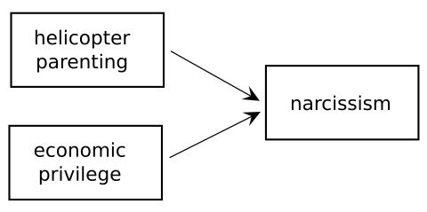
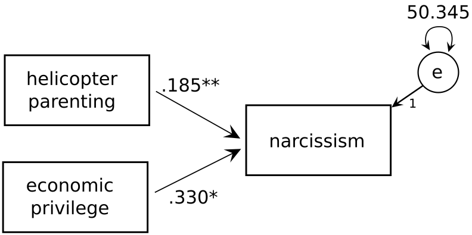
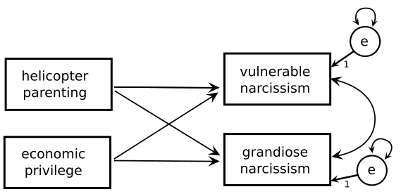
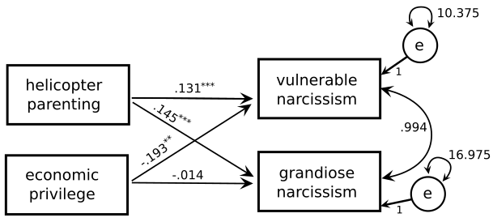

For estimating structural equation models in R we will use the lavaan add-on package (Rosseel, 2012) for R. You can install it by typing install.packages("lavaan") in your R console window.
The main workhorse function for lavaan is called, simply, lavaan(). This is a powerful function that lets you specify a wide array of models. You can see all the options by looking at the help page (?lavaan::lavaan):
lavaan package:lavaan R Documentation
Fit a Latent Variable Model
Description:
Fit a latent variable model.
Usage:
lavaan(model = NULL, data = NULL, ordered = NULL,
sampling.weights = NULL,
sample.cov = NULL, sample.mean = NULL, sample.th = NULL,
sample.nobs = NULL,
group = NULL, cluster = NULL, constraints = "",
WLS.V = NULL, NACOV = NULL, ov.order = "model",
slotOptions = NULL, slotParTable = NULL, slotSampleStats = NULL,
slotData = NULL, slotModel = NULL, slotCache = NULL,
sloth1 = NULL,
...)
The ... in the function syntax suggests there are more options than are listed, and the help page says “See lavOptions for a complete list.” And if you type lavOptions() you will see there are 113 additional options! This can be quite overwhelming for the novice user.
Fortunately, lavaan provides two ‘convenience’ functions that hide away some of this complexity and that automatically choose sensible defaults. These functions are:
function
description
sem()
Fit a structural equation model
cfa()
Fit a confirmatory factor analysis
In what follows, we’ll be using sem() to fit a path model. The function documentation indicates what options of lavaan are set to by default (see ?lavOptions for further information).
The ‘sem’ function is a wrapper for the more general lavaan
function, but setting the following default options: ‘int.ov.free
= TRUE’, ‘int.lv.free = FALSE’, ‘auto.fix.first = TRUE’ (unless
‘std.lv = TRUE’), ‘auto.fix.single = TRUE’, ‘auto.var = TRUE’,
‘auto.cov.lv.x = TRUE’, ‘auto.efa = TRUE’, ‘auto.th = TRUE’,
‘auto.delta = TRUE’, and ‘auto.cov.y = TRUE’.
Many of these options are only relevant for models including latent variables, which our path models will not include. Thus, when using path analyses, these are the defaults you should keep in mind.
option setting
effect
int.ov.free=TRUE
intercepts of observed variables are not fixed to zero
auto.var=TRUE
residual variances for observed variables are set free
auto.cov.y=TRUE
covariances of endogenous variables are modeled and set free
7.2 Example: SEM vs regression
We will begin our practical introduction to path analysis with an example that represents a simple extension from ordinary regression modeling—namely, a situation where you have multiple response variables.
Let’s assume we’re interested in the social determinants of narcisissm and we have given a (subclinical) population a narcissism questionnaire (scale goes from 1-100).
To follow along, download the following files. NB: These files contain simulated (i.e., not real) data, so don’t draw any conclusions about narcissism from the analyses.
We might have the following theory of narcisissm, where parenting style (specifically, the degree of “helicopter” parenting where parents smother their child with attention) and economic privilege jointly determine the level of adult narcissism.

Here, the SEM framework wouldn’t buy us anything because we can fit this model using basic regression.
library("tidyverse") # for read_csvlibrary("lavaan") # for SEM; we'll need these functions later
This is lavaan 0.6-19
lavaan is FREE software! Please report any bugs.
narc_1 <-read_csv("data/narc_1.csv", col_types ="ddd")mod_reg <-lm(Narc ~ HP + EP, data = narc_1)summary(mod_reg)
Call:
lm(formula = Narc ~ HP + EP, data = narc_1)
Residuals:
Min 1Q Median 3Q Max
-18.6504 -4.5028 -0.3351 4.4134 18.0993
Coefficients:
Estimate Std. Error t value Pr(>|t|)
(Intercept) 42.62670 6.48476 6.573 4.31e-10 ***
HP 0.18531 0.06704 2.764 0.00625 **
EP 0.33032 0.12922 2.556 0.01133 *
---
Signif. codes: 0 '***' 0.001 '**' 0.01 '*' 0.05 '.' 0.1 ' ' 1
Residual standard error: 7.149 on 197 degrees of freedom
Multiple R-squared: 0.07027, Adjusted R-squared: 0.06083
F-statistic: 7.445 on 2 and 197 DF, p-value: 0.0007642
sem_formula <-'Narc ~ HP + EP'mod_sem <-sem(sem_formula, data = narc_1)summary(mod_sem, rsquare =TRUE)
lavaan 0.6-19 ended normally after 1 iteration
Estimator ML
Optimization method NLMINB
Number of model parameters 3
Number of observations 200
Model Test User Model:
Test statistic 0.000
Degrees of freedom 0
Parameter Estimates:
Standard errors Standard
Information Expected
Information saturated (h1) model Structured
Regressions:
Estimate Std.Err z-value P(>|z|)
Narc ~
HP 0.185 0.067 2.785 0.005
EP 0.330 0.128 2.576 0.010
Variances:
Estimate Std.Err z-value P(>|z|)
.Narc 50.345 5.034 10.000 0.000
R-Square:
Estimate
Narc 0.070
You can see that the regression coefficients closely match the ones from the regression. We also get an estimate of the residual variance for the DV of 50.345, which is close to the “Residual standard error” in the regression model, because sqrt(50.345) = 7.095, which is close to 7.149.
The summary suggests that we have estimated 3 parameters. What are they? Let’s use lavaan’s parTable() function to see.
parTable(mod_sem)
id lhs op rhs user block group free ustart exo label plabel start est
1 1 Narc ~ HP 1 1 1 1 NA 0 .p1. 0.185 0.185
2 2 Narc ~ EP 1 1 1 2 NA 0 .p2. 0.330 0.330
3 3 Narc ~~ Narc 0 1 1 3 NA 0 .p3. 50.345 50.345
4 4 HP ~~ HP 0 1 1 0 NA 1 .p4. 56.991 56.991
5 5 HP ~~ EP 0 1 1 0 NA 1 .p5. 1.423 1.423
6 6 EP ~~ EP 0 1 1 0 NA 1 .p6. 15.341 15.341
se
1 0.067
2 0.128
3 5.034
4 0.000
5 0.000
6 0.000
The ‘free’ column counts the free parameters. You’ll note that Narc ~ HP, Narc ~ EP and Narc ~~ Narc are the (population) direct effects and variance that are being estimated. All the variances/covariances for the exogenous variables are just directly calculated from the sample, and so they have no standard errors (= 0).
We can also get confidence intervals using the parameterEstimates() function, which also puts the estimates in a table, making them easier to access for reporting.
parameterEstimates(mod_sem)
lhs op rhs est se z pvalue ci.lower ci.upper
1 Narc ~ HP 0.185 0.067 2.785 0.005 0.055 0.316
2 Narc ~ EP 0.330 0.128 2.576 0.010 0.079 0.582
3 Narc ~~ Narc 50.345 5.034 10.000 0.000 40.477 60.212
4 HP ~~ HP 56.991 0.000 NA NA 56.991 56.991
5 HP ~~ EP 1.423 0.000 NA NA 1.423 1.423
6 EP ~~ EP 15.341 0.000 NA NA 15.341 15.341
We can also get standardized estimates. The std.all column is the one you want to look at.
parameterEstimates(mod_sem, standardized =TRUE)
lhs op rhs est se z pvalue ci.lower ci.upper std.lv std.all
1 Narc ~ HP 0.185 0.067 2.785 0.005 0.055 0.316 0.185 0.190
2 Narc ~ EP 0.330 0.128 2.576 0.010 0.079 0.582 0.330 0.176
3 Narc ~~ Narc 50.345 5.034 10.000 0.000 40.477 60.212 50.345 0.930
4 HP ~~ HP 56.991 0.000 NA NA 56.991 56.991 56.991 1.000
5 HP ~~ EP 1.423 0.000 NA NA 1.423 1.423 1.423 0.048
6 EP ~~ EP 15.341 0.000 NA NA 15.341 15.341 15.341 1.000
std.nox
1 0.025
2 0.045
3 0.930
4 56.991
5 1.423
6 15.341

7.2.2 Adding a second DV
Up to this point using SEM doesn’t really buy us anything over and above ordinary regression. But the situation changes if we have more than one DV. Let’s say that instead of a single measure we had a measure of two types of narcissism: vulnerable narcissism (VN) and grandiose narcissism (GN), which, for the sake of example, let’s say are not mutually exclusive (i.e., a person can have a little bit of each).
We could perform two separate regressions, but this has the problem that each regression is performed independently of the other, which only makes sense if we are sure that the two DVs are totally uncorrelated. If they are correlated, then the estimates from this approach will be biased. Here, a SEM approach is useful because it can account for this covariance.

narc_2 <-read_csv("data/narc_2.csv",col_types ="dddd")sem_formula2 <-'VN ~ HP + EPGN ~ HP + EP'mod_sem2 <-sem(sem_formula2, data = narc_2)summary(mod_sem2, rsquare =TRUE)
lavaan 0.6-19 ended normally after 9 iterations
Estimator ML
Optimization method NLMINB
Number of model parameters 7
Number of observations 200
Model Test User Model:
Test statistic 0.000
Degrees of freedom 0
Parameter Estimates:
Standard errors Standard
Information Expected
Information saturated (h1) model Structured
Regressions:
Estimate Std.Err z-value P(>|z|)
VN ~
HP 0.131 0.030 4.351 0.000
EP -0.193 0.058 -3.315 0.001
GN ~
HP 0.145 0.039 3.754 0.000
EP -0.014 0.074 -0.190 0.849
Covariances:
Estimate Std.Err z-value P(>|z|)
.VN ~~
.GN 0.994 0.941 1.056 0.291
Variances:
Estimate Std.Err z-value P(>|z|)
.VN 10.375 1.037 10.000 0.000
.GN 16.975 1.698 10.000 0.000
R-Square:
Estimate
VN 0.125
GN 0.066
Let’s have a look at the model estimates, including standardized coefficients, and add the (raw) coefficients to our path diagram.
parameterEstimates(mod_sem2, standardized =TRUE)
lhs op rhs est se z pvalue ci.lower ci.upper std.lv std.all
1 VN ~ HP 0.131 0.030 4.351 0.000 0.072 0.191 0.131 0.288
2 VN ~ EP -0.193 0.058 -3.315 0.001 -0.307 -0.079 -0.193 -0.219
3 GN ~ HP 0.145 0.039 3.754 0.000 0.069 0.221 0.145 0.257
4 GN ~ EP -0.014 0.074 -0.190 0.849 -0.160 0.132 -0.014 -0.013
5 VN ~~ VN 10.375 1.037 10.000 0.000 8.341 12.408 10.375 0.875
6 GN ~~ GN 16.975 1.698 10.000 0.000 13.648 20.302 16.975 0.934
7 VN ~~ GN 0.994 0.941 1.056 0.291 -0.850 2.838 0.994 0.075
8 HP ~~ HP 56.991 0.000 NA NA 56.991 56.991 56.991 1.000
9 HP ~~ EP 1.423 0.000 NA NA 1.423 1.423 1.423 0.048
10 EP ~~ EP 15.341 0.000 NA NA 15.341 15.341 15.341 1.000
std.nox
1 0.038
2 -0.056
3 0.034
4 -0.003
5 0.875
6 0.934
7 0.075
8 56.991
9 1.423
10 15.341

Rosseel, Y. (2012). Lavaan: An r package for structural equation modeling. Journal of Statistical Software, 48(2), 1–36. https://doi.org/10.18637/jss.v048.i02